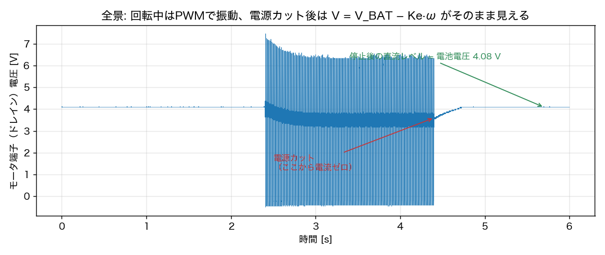
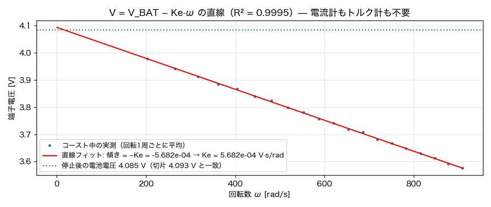

逆起電力定数 \(K_e\)（= SI単位系ではトルク定数 \(K_t\)）は、モータモデルの心臓部です。 定石は「電圧・電流・回転数を測って \(V = K_e\omega + RI\) を解く」ですが、 StampFly の基板に電流シャント（電流計測用の抵抗）はありません。 そこで発想を変えます——電流がゼロの瞬間を作ってしまえば、 電流計は要らない。
C.1 原理 — 電源を切った瞬間、端子電圧は発電機の声になる
モータの電圧方程式は \(V = K_e\omega + RI\)（インダクタンスは第4章のとおり 無視できる）。電源を切ると駆動FETが開き、電流の通り道がなくなるので \(I = 0\)。すると:
（端子はハイサイドが電池につながった回路構成なので、逆起電力の分だけ 電池電圧から下がって見えます。）\(IR\) 降下が消えたので、 この式には \(R\) すら入っていません。惰性で回り続ける間の 端子電圧と回転数を同時に記録して \(V\)–\(\omega\) 平面に描けば、 傾きがそのまま \(-K_e\)、切片が電池電圧になるはずです。
C.2 記録 — 2チャネル同時収録
CH1 に付録Aと同じフォトインタラプタ（回転数用）、CH2 にモータ端子 （FETのドレイン）電圧をつないで、回転→電源カット→停止までを 1回の掃引で記録します。

C.3 直線を引く
コースト中の各回転について端子電圧を平均し（PWMは止まっているので ノイズ均しの意味だけ）、その回転の \(\omega\) と組にして散布図を描きます:

検算が2重に効いています。①切片 = 電池電圧: フィットの切片 4.093 V と、停止後の直流レベル 4.085 V が独立に一致。 ②物理クランプ: 波形中に現れる負電圧の張り付きが、FET の ボディダイオード（FET に構造上内蔵される寄生ダイオード）の順方向電圧 −0.46 V にぴったり一致し、電圧スケール自体の正しさを裏づけます。
C.4 結果と使い道
- \(K_e = K_t = 5.682\times10^{-4}\ \mathrm{V\,s/rad}\)（R² = 0.9995）。 別個体の無負荷 V–ω 実測（5.35〜5.53×10⁻⁴）とも個体差の範囲で整合
- \(K_t K_e / R\) が「電気ブレーキ」の強さを決め、モータ実効時定数 16 ms の減衰の 64% を占める（第4章）
- 第6章のシミュレーションのプラント数値も、元をたどればこの直線の傾き
データ: data/coastdown_scpi_refetch.npz（LAN/SCPI 直接取得・600万点）。 取得ツール: notes/calc/ds1054z_fetch.py（自作・依存ライブラリなし）。 解析の再現: notes/calc/ke_from_coastdown.py、notes/calc/make_appendix_figs.py。 経緯の全記録: notes/qa_log.md（Q4-17〜Q4-32）。